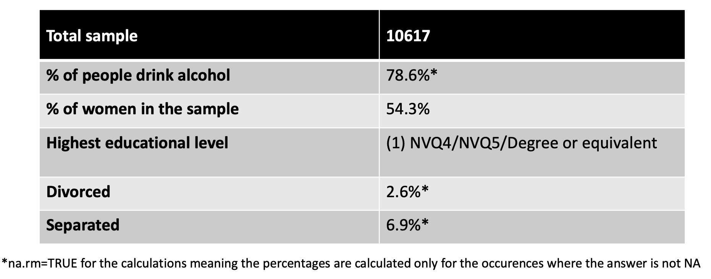
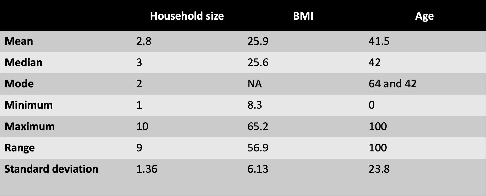
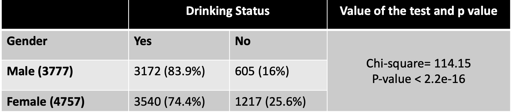
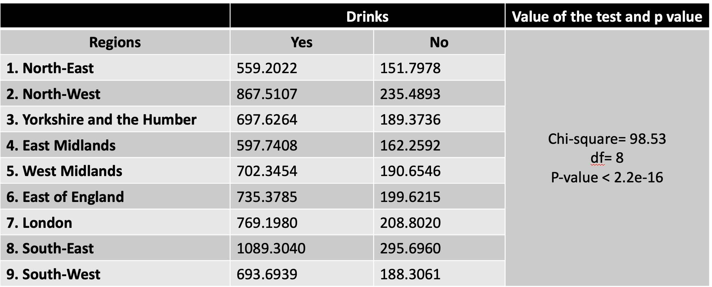
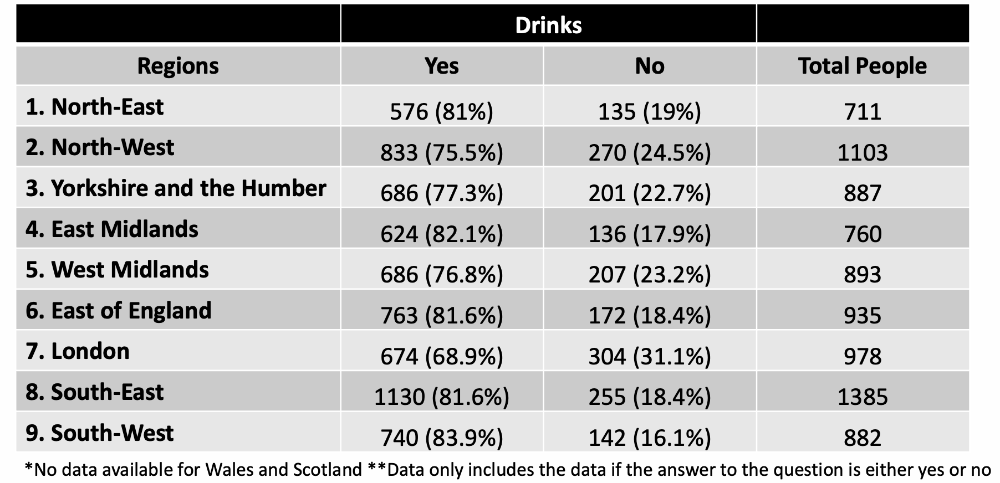
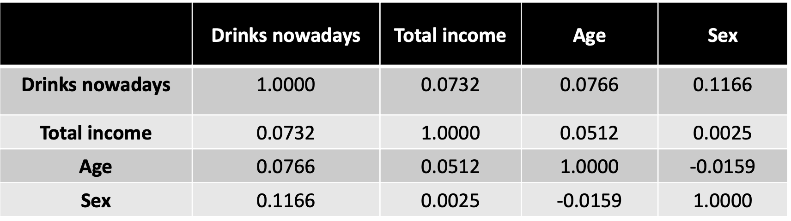

November 2023

Numerical Analysis
End of Module Assignment
The consumption of alcohol carries various health risks such as increased chances of accidents and injuries, as well as serious conditions like cancer and heart disease, which can lead to a decrease in life expectancy. [1] Alcohol consumption and its associated impacts have long been a subject of concern in the United Kingdom. In 2019/20, an estimated 280,000 hospital admissions were primarily due to alcohol-related issues. This is 2% higher than 2018/19 and 8% higher than 2016/17. [2] The annual cost to the NHS from alcohol misuse has been estimated as £2.7 billion at 2007 prices.[3]
Purpose of this presentation is to assess the alcohol situation in the UK. Data used for that reason is a Health Survey from 2011, which is a survey designed to monitor trends in the nation's health. The survey is also used to monitor progress towards selected health targets. Statistical analysis will be calculated using R, as R can perform complex statistical computations easily. Significance test to find out which gender drinks more alcohol.
 Total in the sample: 10617
Total answered to the drinking status question yes or no: 8534 people
There is a statistically significant difference in alcohol consumption between males and females, with males being more likely to drink alcohol than females. The extremely small P-value indicates that this result is highly unlikely to have occurred by chance, meaning that the difference in alcohol consumption rates between genders is statistically significant. Given the context of contingency table, where a higher percentage of males (83.9%) drink alcohol compared to females (74.4%), the Chi-squared test supports the conclusion that gender is associated with alcohol consumption, and that this association is strong and statistically significant. Significance test to find out which region drinks more alcohol.
 High Chi-squared statistic and the p-value being less than 2.2e-16, it can be concluded with a high degree of confidence that there is a significant association between the region and drinking status. P-value < 2.2e-16: This extremely small p-value indicates that the probability of observing a Chi-squared statistic as extreme as 98.53 under the null hypothesis (which states there is no association between region and drinking status) is virtually zero. This leads to reject the null hypothesis and conclude there is a statistically significant association between region and drinking status. According to the provided table, the South-West region has the highest proportion of drinkers at 83.9%. The East Midlands follows closely with a ratio of 82.1%, while both the South-East and the East of England regions are tied for the third-highest ratio at 81.6%. London registers the smallest percentage of drinkers relative to the other regions.
Investigate whether there is a statistical difference between men and women on Valid height
To compare different groups; Two Sample (Welch) t-test is appropriate.
H0: There is no connection between sex and height. H1: There is connection between sex and height.
Results; t = 25.197, df = 6964.1, p-value < 2.2e-16 alternative hypothesis: true difference in means between group 1 and group 2 is not equal to 0 95 percent confidence interval: 9.394798 10.979901 sample estimates: mean in group 1 mean in group 2 167.3928 157.2054
t = 25.197: This is the t-statistic, which is a measure of the difference between the two group means relative to the variability of the samples. The large value here suggests a substantial difference between the groups.
p-value < 2.2e-16: This indicates that the test found a statistically significant difference between the two groups.
Sample estimates: The sample mean for group 1 (males) is 167.3928, and the sample mean for group 2 (females) is 157.2054. This indicates that the average height for group 1 is higher than that of group 2. The t-test suggests a statistically significant difference in height between the two groups, with group 1 having a higher mean height than group 2. The difference in the mean heights is approximately between 9.39 and 10.98 units. Males in this sample are, on average, significantly taller than females.
Investigate whether there is a statistical difference between men and women on Valid weight To compare different groups; Two Sample (Welch) t-test is appropriate.
H0: There is no connection between sex and weight. H1: There is connection between sex and weight.
t = 17.847, df = 7777, p-value < 2.2e-16 alternative hypothesis: true difference in means between group 1 and group 2 is not equal to 0 95 percent confidence interval: 8.463743 10.552436 sample estimates: mean in group 1 mean in group 2 74.26612 64.75803
t = 17.847: The large value here suggests a substantial difference between the groups. p-value < 2.2e-16: This indicates that the test found a statistically significant difference between the two groups. Sample estimates: The mean weight for males is 74.26612, and for females is 64.75803. This indicates that the average weight for males is higher.
There is a significant difference in the valid weight between the two groups. The average weight of males exceeds that of females by an amount that lies in the interval between approximately 8.46 and 10.55. The statistical test is highly significant, strongly suggesting that this difference is not due to random chance.
What is the correlation between whether a person drinks nowadays, total household income, age at last birthday and gender? To find the correlation Pearson correlation used.  Positive Correlation: Indicates that as one variable increases, the other variable tends to increase as well. Negative Correlation: Indicates that as one variable increases, the other variable tends to decrease. Magnitude of Correlation Coefficient: Values closer to 1 or -1 indicate a stronger correlation, while values closer to 0 indicate a weaker correlation. Drinking status and Sex (0.116): This is a weak to moderate positive correlation, suggesting that there is a relationship between sex and drinking status, with one sex possibly being more inclined to drink than the other. The direction (which sex drinks more) cannot be determined from the correlation coefficient alone. Income and Drinking Status (0.07): A weak positive correlation. Age and Sex (-0.0159): A very weak negative correlation, suggesting a negligible relationship between age and sex, meaning age distribution is roughly the same across sexes. The strongest correlation in this matrix involves Sex and Drinking Status, suggesting a modest association between gender and drinking status. However, all relationships are relatively weak, indicating that none of these variables strongly predict the others within this dataset. It's important to remember that correlation does not imply causation. nSome key results; •Sample size: 10,617 individuals, alcohol consumption is approximately 78.6% •Male drinkers are higher and statistically significant results for alcohol for gender •Highest proportion of drinkers in South-West (83.9%), followed by East Midlands (82.1%), South-East and East of England (81.6% each), and lowest in London •Weak to moderate positive correlation between sex and drinking status (0.116) •Weak positive correlation between income and drinking status (0.0732) •Very weak negative correlation between age and sex (-0.0159) According to the literature; Gender and alcohol According to a report from the OECD, men on average drinks more than women [4]. This study’s findings are in alignment with this observation. Region and alcohol According to the literature, South-west is the part within the UK with the highest alcohol consumption and London has the lowest [5]. This is also coherent with the findings of the study. Public Health Initiatives: With a high percentage of the sample reporting alcohol consumption, public health campaigns could focus on educating about the risks associated with alcohol use. These initiatives could be tailored to regions with higher alcohol consumption rates, such as the South-West. Targeted Interventions: Since men report higher alcohol consumption than women, interventions could be specifically designed for men, perhaps incorporating activities or locations where they are more likely to be receptive to messaging about reducing alcohol intake. Research on Income and Drinking Patterns: Although the correlation between total income and drinking status was weak, it could be insightful for further research to explore this relationship in more depth, potentially to inform policy decisions related to alcohol taxation and pricing. [1] https://digital.nhs.uk/data-and-information/publications/statistical/health-survey-for-england/2021/part-3-drinking-alcohol#alcohol-and-health [2] https://digital.nhs.uk/data-and-information/publications/statistical/statistics-on-alcohol/2021/part-1 [3]Health and Social Care Information Centre. Statistics on Alcohol: England, 2012, Leeds 2012 www.ic.nhs.uk/statistics-and-data-collections/health-and-lifestyles/alcohol/statistics-on-alcohol-england-2012-[ns] [4] Tackling Harmful Alcohol Usage in the United Kingdom, Country Note, (n.d) https://www.oecd.org/unitedkingdom/Tackling-Harmful-Alcohol-Use-United-Kingdom-en.pdf [5] Robinson, M., Shipton, D., Walsh, D. et al. Regional alcohol consumption and alcohol-related mortality in Great Britain: novel insights using retail sales data. BMC Public Health 15, 1 (2015). https://doi.org/10.1186/1471-2458-15-1